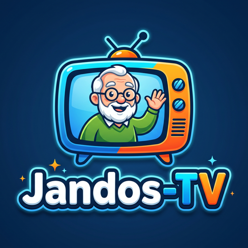

🔇 Presiona cualquier tecla o haz clic para activar el audio
⏩ +15s
CANAL
01
12:00 PM
Cargando canal...
SINTONIZANDO CANAL
01
Cambiando automáticamente...

JANDOS-TV
📺 CANALES EN VIVO
🎬 SERIES EN ORDEN
Flechas ◄ / ► para cambiar pestaña | ▲ / ▼ y OK para elegir
El Chavo del 8
◄ Flecha Izquierda para volver a las series
▶
CONTINUAR VIENDO (Cap. 01)
Sintonizando canal...
Por favor espere un momento